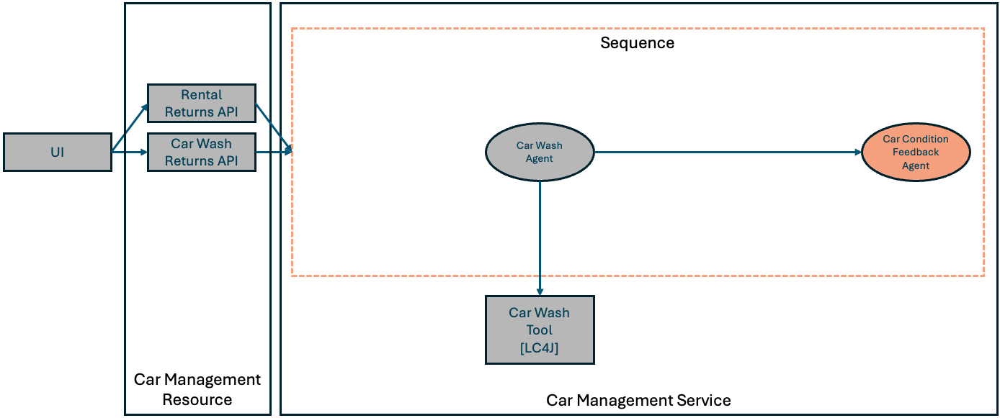

Step 02 - Composing Simple Agent Workflows
Tracking the Condition of Cars
The Miles of Smiles management team now wants to keep track of the condition of its cars.
In the previous step, cars could be returned by the team processing returns or the car wash team — and in either case comments could be provided from the teams about the car. We would like to automatically update the recorded condition of the car based on those comments.
In this step you will be introduced to using multiple agents together in a workflow.
Workflows
With LangChain4j you can set up a set of agents to work together to solve problems. Much like the building blocks of a programming language, langchain4j-agentic provides some basic constructs you can use to build agentic workflows:
- Sequence Workflows - Agents execute one after another in a predetermined order.
- Parallel Workflows - Agents execute at the same time on separate threads.
- Loop Workflows - A sequence of agents runs repeatedly, until some condition is satisfied.
- Conditional Workflows - A sequence of agents runs in a predetermined order, but each agent in the sequence only runs if a specified condition is satisfied.
To satisfy management’s new requirement, let’s use a sequence of agents to first call the car wash agent, and then call another agent to update the car condition.
To enable agents to better work together, langchain4j-agentic includes a shared context class called AgenticScope. The agent framework uses the AgenticScope to maintain context between calls to each agent in a workflow. When calling an agent in a workflow, the agent framework attempts to use an internal map in the AgenticScope to read inputs corresponding to the list of inputs declared in the agent method’s signature. When an agent returns a result, the agent framework writes the result into the AgenticScope’s map using the output name specified by the agent.
What Are We Going to Build?

We’ll create a workflow that processes car returns, updates car conditions based on feedback, and manages the car washing process.
Starting from our app in step-01, we need to:
Create/Update agent and workflow declarations:
- Create a
CarConditionFeedbackAgent - Create a
CarProcessingWorkflowagent interface to use for the sequence workflow
Define the agents and workflows:
- Define the sequence workflow in
CarManagementService - Modify the
CarManagementServiceto use the sequence workflow
Before You Begin
You can either use the code from step-01 and continue from there, or check the final code of the step located in the step-02 directory.
Do not forget to close the application
If you have the application running from the previous step and decide to use the step-02 directory, make sure to stop it (CTRL+C) before continuing.
If you are continuing to build the app in the step-01 directory, start by copying some files (which don’t relate to the experience of building agentic AI apps) from step-02. Run the following command from your section-2 directory:
For Linux/macOS:
Create/Update agent and workflow declarations
Create a CarConditionFeedbackAgent
In the src/main/java/com/carmanagement/agentic/agents directory, create the CarConditionFeedbackAgent:
package com.carmanagement.agentic.agents;
import dev.langchain4j.service.SystemMessage;
import dev.langchain4j.service.UserMessage;
import dev.langchain4j.service.V;
import dev.langchain4j.agentic.Agent;
/**
* Agent that analyzes feedback to update the car condition.
*/
public interface CarConditionFeedbackAgent {
@SystemMessage("""
/nothink, Reasoning: low.
You are a car condition analyzer for a car rental company. Your job is to determine the current condition of a car based on feedback.
Analyze all feedback and the previous car condition to provide an updated condition description.
Always provide a concise condition description, even if there's minimal feedback.
Do not add any headers or prefixes to your response.
""")
@UserMessage("""
Car Information:
Make: {{carMake}}
Model: {{carModel}}
Year: {{carYear}}
Previous Condition: {{carCondition}}
Rental Feedback: {{rentalFeedback}}
Car Wash Feedback: {{carWashFeedback}}
""")
@Agent(outputName="carCondition", description="Car condition analyzer. Determines the current condition of a car based on feedback.")
String analyzeForCondition(
@V("carMake") String carMake,
@V("carModel") String carModel,
@V("carYear") Integer carYear,
@V("carNumber") Integer carNumber,
@V("carCondition") String carCondition,
@V("rentalFeedback") String rentalFeedback,
@V("carWashFeedback") String carWashFeedback);
}
As we’ve seen before, the interface for an agent defines the system message, user message and indicates which method is the agent method. The car condition feedback agent will assess the car’s condition based on its previous known condition and the feedback provided.
Create a CarProcessingWorkflow Agent Interface to Use for the Sequence Workflow
In the src/main/java/com/carmanagement/agentic/workflow/ directory, create the CarProcessingWorkflow agent interface to use for the sequence workflow:
package com.carmanagement.agentic.workflow;
import dev.langchain4j.agentic.Agent;
import dev.langchain4j.agentic.scope.ResultWithAgenticScope;
import dev.langchain4j.service.V;
/**
* Workflow for processing car returns using a sequence of agents.
*/
public interface CarProcessingWorkflow {
/**
* Processes a car return by running feedback analysis and then appropriate actions.
*/
@Agent(outputName="carProcessingAgentResult")
ResultWithAgenticScope<String> processCarReturn(
@V("carMake") String carMake,
@V("carModel") String carModel,
@V("carYear") Integer carYear,
@V("carNumber") Integer carNumber,
@V("carCondition") String carCondition,
@V("rentalFeedback") String rentalFeedback,
@V("carWashFeedback") String carWashFeedback);
}
CarProcessingWorkflow is a type-safe interface that we can use as our sequence workflow. Notice that the CarProcessingWorkflow interface looks a lot like a regular agent. Workflows can be thought of as containers for sets of agents, not agents themselves. Since workflows do not interact with LLMs, they do not have @SystemMessage or @UserMessage annotations. Notice that the processCarReturn method returns a result with type ResultWithAgenticScope<String> – which contains the text response from the agent as well as the AgenticScope that is created and used in the workflow.
Define the agents and workflows
We’ll need to make a few changes to our CarManagementService to define our new agent and workflow.
Complete the steps described below, or simply copy the following code to the file in your src/main/java/com/carmanagement/service directory.
package com.carmanagement.service;
import com.carmanagement.agentic.agents.CarConditionFeedbackAgent;
import com.carmanagement.agentic.agents.CarWashAgent;
import com.carmanagement.agentic.config.Models;
import com.carmanagement.agentic.tools.CarWashTool;
import com.carmanagement.agentic.workflow.CarProcessingWorkflow;
import com.carmanagement.model.CarInfo;
import com.carmanagement.model.CarStatus;
import dev.langchain4j.agentic.AgenticServices;
import dev.langchain4j.agentic.scope.AgenticScope;
import dev.langchain4j.agentic.scope.ResultWithAgenticScope;
import jakarta.enterprise.context.ApplicationScoped;
import jakarta.inject.Inject;
import jakarta.annotation.PostConstruct;
/**
* Service for managing car returns from various operations.
*/
@ApplicationScoped
public class CarManagementService {
/**
* Enum representing the type of agent to be selected for car processing
*/
public enum AgentType {
CAR_WASH,
NONE
}
@Inject
CarService carService;
@Inject
Models models;
@Inject
CarWashTool carWashTool;
private CarProcessingWorkflow carProcessingWorkflow;
@PostConstruct
void initialize() { // (1)
carProcessingWorkflow = createCarProcessingWorkflow();
}
private CarProcessingWorkflow createCarProcessingWorkflow() {
// CarWashAgent (2)
CarWashAgent carWashAgent = AgenticServices
.agentBuilder(CarWashAgent.class)
.chatModel(models.baseModel())
.tools(carWashTool)
.build();
// CarConditionFeedbackAgent (2)
CarConditionFeedbackAgent carConditionFeedbackAgent = AgenticServices
.agentBuilder(CarConditionFeedbackAgent.class)
.chatModel(models.baseModel())
.build();
// CarProcessingWorkflow - simple sequence of CarWashAgent and CarConditionFeedbackAgent (3)
CarProcessingWorkflow carProcessingWorkflow = AgenticServices
.sequenceBuilder(CarProcessingWorkflow.class)
.subAgents(carWashAgent, carConditionFeedbackAgent)
.build();
return carProcessingWorkflow;
}
/**
* Process a car return from any operation.
*
* @param carNumber The car number
* @param rentalFeedback Optional rental feedback
* @return Result of the processing
*/
public String processCarReturn(Integer carNumber, String rentalFeedback, String carWashFeedback) {
CarInfo carInfo = carService.getCarById(carNumber);
if (carInfo == null) {
return "Car not found with number: " + carNumber;
}
// Process the car return using the workflow and get the AgenticScope (4)
ResultWithAgenticScope<String> resultWithScope = carProcessingWorkflow.processCarReturn(
carInfo.getMake(),
carInfo.getModel(),
carInfo.getYear(),
carNumber,
carInfo.getCondition(),
rentalFeedback != null ? rentalFeedback : "",
carWashFeedback != null ? carWashFeedback : "");
String result = resultWithScope.result(); // (5)
AgenticScope scope = resultWithScope.agenticScope();
// Update the car's condition with the result from CarConditionFeedbackAgent
String newCondition = (String) scope.readState("carCondition");
if (newCondition != null && !newCondition.isEmpty()) {
carInfo.setCondition(newCondition);
}
// If carwash was not required, make the car available to rent (6)
if (!isRequired(scope, "carWashAgentResult")) {
carInfo.setStatus(CarStatus.AVAILABLE);
}
return result;
}
private static boolean isRequired(AgenticScope agenticScope, String key) {
String s = (String)agenticScope.readState(key);
boolean required = s != null && !s.isEmpty() && !s.toUpperCase().contains("NOT_REQUIRED");
return required;
}
}
Define the Sequence Workflow in CarManagementService
First, we’ll define the sequence workflow in CarManagementService.
- Let’s modify the
initializemethod to initialize theCarProcessingWorkflowwhen the service is instantiated. - The
createCarProcessingWorkflowmethod needs to define theCarWashAgentandCarConditionFeedbackAgent— the 2 agents we want to include in our sequence workflow. - The
createCarProcessingWorkflowmethod then needs to define the sequence workflow,CarProcessingWorkflow, including theCarWashAgentandCarConditionFeedbackAgentas subagents (the subagent list represents the list of agents that are in the workflow).
In the CarManagementService, let’s modify the processCarReturn method to call the carProcessingWorkflow and process its results.
-
We need to invoke
carProcessingWorkflow.processCarReturn, the agent method, to cause each of the subagents to be executed in sequence. -
Retrieve the
carConditionvalue from theAgenticScope, and use that value as the new condition for the car. -
As before, check the results from the car wash agent to decide whether to change the car state.
Try Out the New Workflow
Now that we have updated the workflow to update the car condition we can try it in the UI.
In your browser, access http://localhost:8080.
Notice that the Fleet Status section of the UI now has a “Condition” column, indicating the last known condition of the car.
On the Rental Return tab choose a car and enter some feedback that would indicate something has changed about the condition of the car. For example:
After submitting the feedback (by hitting the Return button), and a brief pause, you should see the condition of the car gets updated in the Fleet Status section.
Take a moment to look at the logs from your Quarkus runtime. You should be able to identify the following sequence of events:
- an HTTP request to the car wash agent
- an HTTP response from the car wash agent, requesting to run the requestCarWash function
- the CarWashTool output, requesting interior cleaning of the car (and possibly other options)
- an HTTP request to the car wash agent, including the response from the car wash tool
- an HTTP response from the car wash agent, stating that the car wash has been requested
- an HTTP request to the car condition feedback agent
- an HTTP response from the car condition feedback agent, providing a new car condition summary
When to Use Parallel Workflows
In this step, we could have run the car wash agent and the car condition feedback agent in parallel since the car condition feedback agent doesn’t depend on the output from the car wash agent. We chose to do them in sequence to simplify later steps in this lab, but you can try changing the sequence workflow to a parallel workflow (which should complete faster than the sequence workflow).